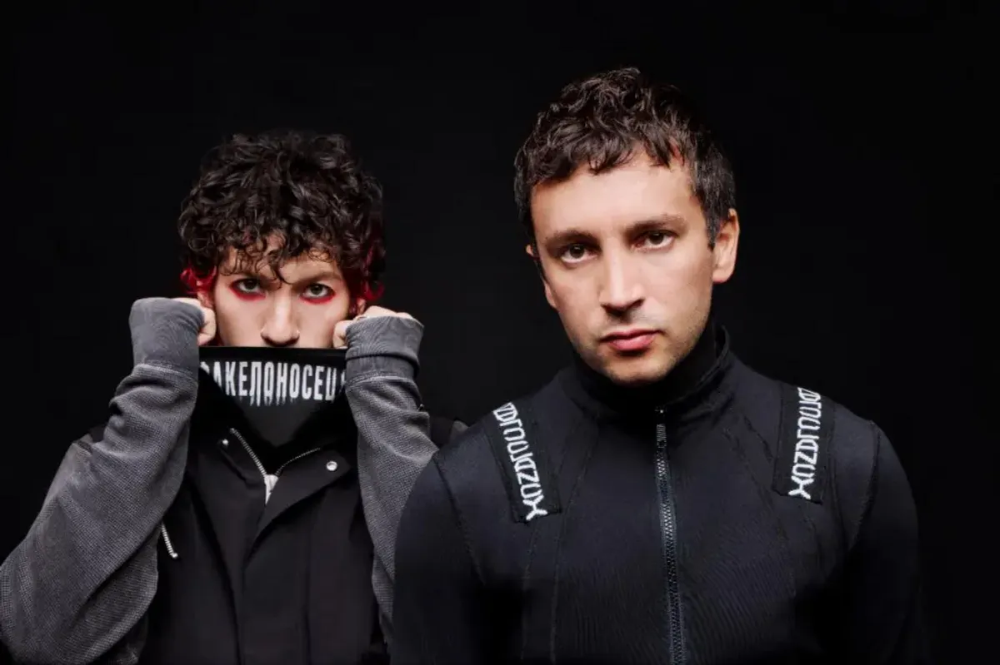

Twenty One Pilots é uma dupla norte-americana formada por Tyler Joseph e Josh Dun, conhecida por misturar rock alternativo, hip-hop, pop, eletrônica, reggae e elementos acústicos em uma sonoridade difícil de colocar em uma única category.
Mais do que uma banda, Twenty One Pilots construiu ao longo dos anos um verdadeiro universo próprio. Suas músicas, videoclipes, símbolos, personagens, cores e álbuns se conectam por uma narrativa conhecida pelos fãs como lore.
A história começou em Columbus, Ohio, em 2009, quando Tyler Joseph, Nick Thomas e Chris Salih formaram a banda. Depois das mudanças na formação, Tyler e Josh Dun se tornaram o núcleo definitivo do grupo.
Desde então, a dupla passou de shows pequenos em Ohio para arenas lotadas ao redor do mundo, acumulando bilhões de reproduções, certificações multiplatina, prêmios e uma das comunidades de fãs mais dedicadas da música alternativa.
E talvez a melhor forma de entender Twenty One Pilots seja justamente esta: você pode ouvir uma música simplesmente como uma música, ou pode entrar no universo por trás dela e descobrir uma história inteira.

A história do Twenty One Pilots começa em Columbus, Ohio, nos Estados Unidos. Antes mesmo da formação da banda, Tyler Joseph já estava envolvido com música. Ele começou a desenvolver suas habilidades como compositor e músico ainda jovem, chegando a gravar material independente antes de formar o grupo.
Durante a faculdade, Tyler conheceu Chris Salih, que o incentivou a transformar suas ideias musicais em uma banda. Nick Thomas, amigo de Tyler, também entrou no projeto.
O trio começou a tocar em pequenos locais da região de Columbus e rapidamente chamou atenção por apresentações extremamente energéticas.
Em vez de simplesmente subir ao palco e tocar suas músicas, o grupo incorporava teatro, energia física, improvisação e elementos visuais às apresentações.
Essa característica acabaria se tornando uma das marcas registradas do Twenty One Pilots.
Em 29 de dezembro de 2009, a banda lançou seu primeiro álbum, simplesmente chamado Twenty One Pilots.
Uma das curiosidades mais famosas da banda está justamente no nome.
Twenty One Pilots foi inspirado na peça All My Sons, do dramaturgo Arthur Miller.
Na história, um empresário toma uma decisão moralmente questionável relacionada à produção de peças defeituosas para aviões durante a Segunda Guerra Mundial. A consequência envolve a morte de 21 pilotos.
Tyler utilizou essa história como inspiração para o nome porque ela envolve uma questão que aparece diversas vezes na identidade da banda: é onde uma pessoa está disposta a ir quando precisa tomar uma decisão difícil?
O nome acabou representando uma ideia muito presente nas músicas da dupla: escolhas, consequências, responsabilidade e conflitos internos.